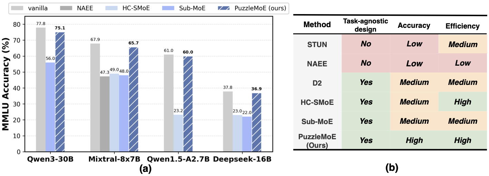
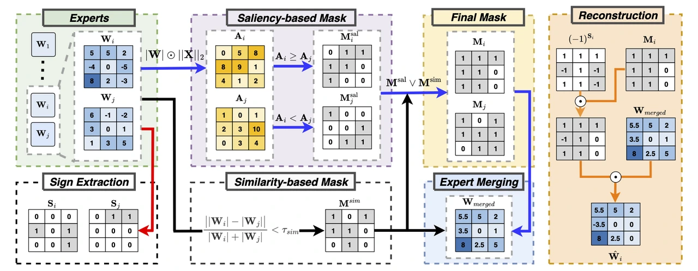
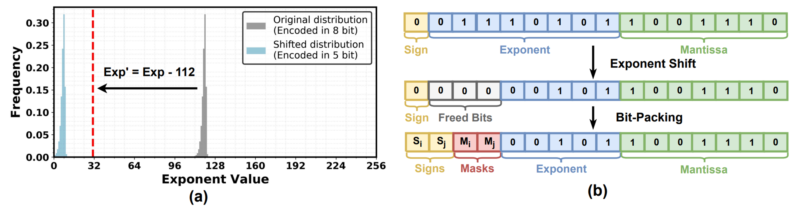
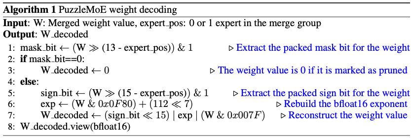
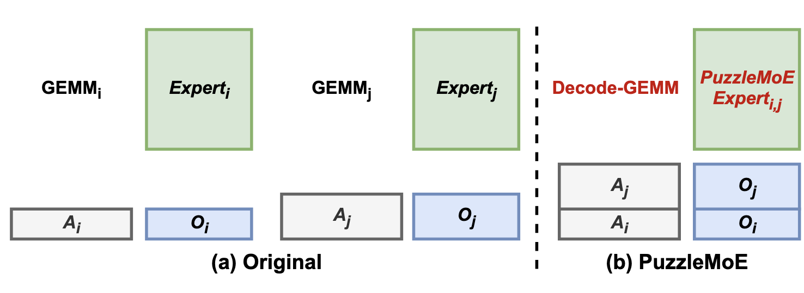
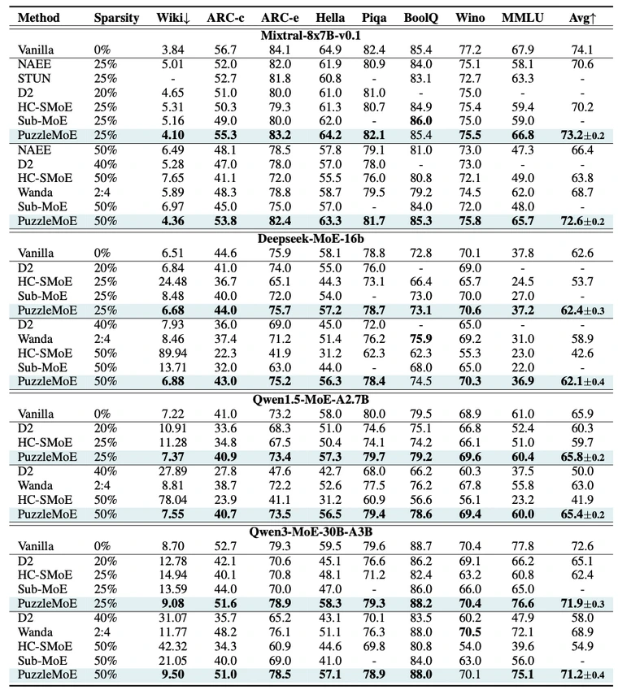
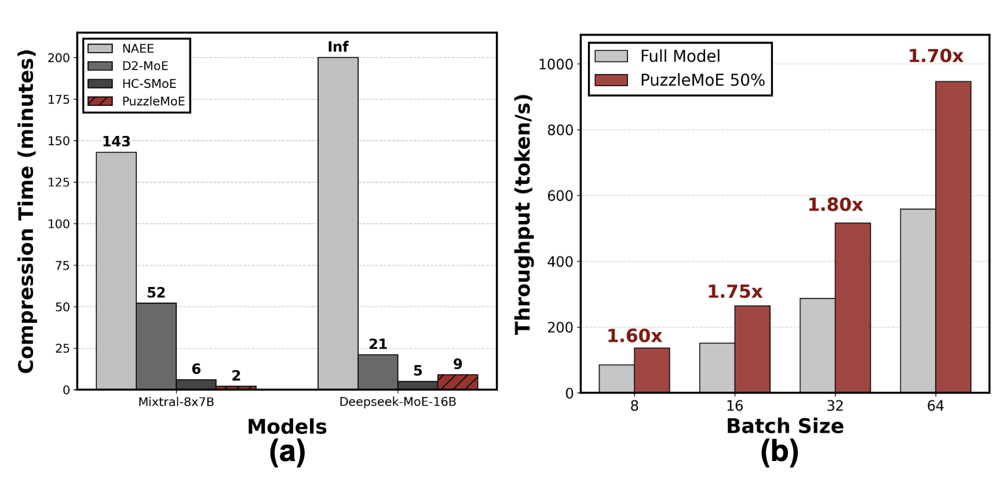

Mixture-of-Experts (MoE) have shown strong po- tential in scaling language models efficiently by activating only a small subset of experts per in- put. However, their deployment remains limited due to the high memory overhead associated with storing all expert parameters, particularly as the number of experts increases. To address this chal- lenge, prior works have explored expert dropping and merging strategies; however, they often suffer from notable performance drop especially at high compression ratios due to their reliance on coarse- grained tensor- or expert-level operations. In this paper, we introduce PuzzleMoE, the first MoE merging method to enable fine-grained element- wise merging while achieving both high accu- racy and inference speed, via two key innovations: First, PuzzleMoE performs sparse expert merging by identifying element-wise weight redundancy and specialization. It introduces a dual-mask ap- proach to capture both shared and expert-specific salient parameters. Second, to avoid the overhead of storing masks and signs, we introduce a bit- packed encoding scheme that reuses underutilized exponent bits, enabling efficient MoE inference on GPUs. Extensive experiments demonstrate that PuzzleMoE outperforms prior MoE compres- sion methods by up to 16.7% on MMLU at 50% compression ratio, and achieves up to 1.80× end- to-end inference throughput gain.
PuzzleMoE achieves efficient fine-grained sparse expert merging through a deliberately designed pairwise dual-mask merging algorithm and a system co-design with bit-level packing technique. These two designs can effectively maintain MoE models' performance after compression while minimizing the masking overhead at the inference stage.

We merge a pair of experts i and j by (i) computing per-expert saliency masks \(\mathbf{M}^{\mathrm{sal}}_i\) and \(\mathbf{M}^{\mathrm{sal}}_j\) to retain high-importance weights, (ii) building a cross-expert similarity mask \(\mathbf{M}^{\mathrm{sim}}\) to keep aligned weights, and (iii) extracting sign matrices \(\mathbf{S}_i\) and \(\mathbf{S}_j\). The merged magnitude \(\mathbf{W}_{\mathrm{merged}}\) is then defined element-wise by
\[ \mathbf{W}_{\mathrm{merged}} = \mathbf{M}^{\mathrm{sim}} \odot \tfrac{|\mathbf{W}_i| + |\mathbf{W}_j|}{2} \;+\; \bigl(\mathbf{1} - \mathbf{M}^{\mathrm{sim}}\bigr) \odot \bigl(\mathbf{M}^{\mathrm{sal}}_{i}\odot|\mathbf{W}_i| + \mathbf{M}^{\mathrm{sal}}_{j}\odot|\mathbf{W}_j|\bigr), \]where \(\odot\) denotes element-wise multiplication and \(\mathbf{1}\) is the all-ones matrix of matching shape. Finally, we store \(\{\mathbf{M}^{\mathrm{sal}}_{i}, \mathbf{M}^{\mathrm{sal}}_{j}, \mathbf{S}_{i}, \mathbf{S}_{j}, \mathbf{W}_{\mathrm{merged}}\}\) for inference.

Observation. The Bfloat16 data format, which allocates 1 sign, 8 exponent, and 7 mantissa bits, is standard for LLM inference. We found that MoE LLMs underutilize the available 8-bit exponent range: expert-weight exponents concentrate in a narrow band, leaving much of the dynamic range unused. For Mixtral-8×7B (Figure 3(a)), most exponents fall between 112 and 128.
Bit-Packing Operation. Leveraging the concentrated exponent distribution, we apply a fixed shift to map all exponents into a 5-bit range, as illustrated in Figure 3(b). Specifically, any exponent smaller than 112 is rounded up to 112, and then all exponents are shifted down by 112, resulting in values that fall within the range of 0 to 31. This shift operation frees 3 bits within the original 8-bit exponent field, which can be used to pack the binary mask bits and a sign bit. Hence, the resultant $\mathbf{W}_{merged}$ is stored in a standard Bfloat16 data format, effectively embedding the masks and signs without additional storage.

On-the-fly decoding. To turn the bit-packing scheme into actual inference speedup, we implement a specialized decode-GEMM kernel in Triton. Following Algorithm 1, each weight is decoded from its packed format on the fly, immediately before being used in the multiplication. This avoids materializing the decoded matrix in memory: the decoding logic is a lightweight in-place operation that piggybacks on the kernel's existing data-loading path, adding negligible overhead.
Fused two-expert computation. The kernel also exploits the merged-expert structure for additional savings. As illustrated in Figure 4, a conventional GEMM requires two separate memory transactions to load each expert's weights. Our kernel instead performs a single access to the packed $\mathbf{W}_{merged}$ to produce both outputs $O_i, O_j$ from concatenated inputs $A_i, A_j$, yielding a theoretical 2× latency reduction in memory-bound GEMM during LLM decoding.

PuzzleMoE can effectively reserve MoE LLMs’ performance after aggressive expert merging, whose superior performance arises from its fine-grained sparse expert merging strategy.


Compression Cost. (a) PuzzleMoE only takes 2 minutes for compressing Mixtral-8x7B, while D2 takes 55 minutes due to the heavy computation cost of SVD operation. For Deepseek-MoE, PuzzleMoE takes 10 minutes for compression, indicating the efficiency of PuzzleMoE on MoE models with a large number of experts. Note that NAEE’s reliance on exhaustive search makes the compression time quite expensive. For instance, applying it to DeepSeek-MoE with 64 experts requires $10^{18}$ on the order of forward passes, rendering it infeasible in practice.
End-to-end Throughput. We benchmark the end-to-end throughput of PuzzleMoE on a cluster with 8 RTX5090 GPUs, with results of Mixtral-8x7B at a 50% compression ratio illustrated in Figure 6(b). Under a configuration of 16 prefill tokens and 128 decoding tokens across various batch sizes, PuzzleMoE achieves up to a 1.80× speedup compared to the uncompressed baseline. This efficiency gain is primarily driven by our specialized PuzzleMoE decode-GEMM kernel, which delivers a 2× throughput improvement over the standard cuBLAS implementation.
@misc{zhao2025puzzlemoeefficientcompressionlarge,
title={PuzzleMoE: Efficient Compression of Large Mixture-of-Experts Models via Sparse Expert Merging and Bit-packed inference},
author={Yushu Zhao and Zheng Wang and Minjia Zhang},
year={2025},
eprint={2511.04805},
archivePrefix={arXiv},
primaryClass={cs.LG},
url={https://arxiv.org/abs/2511.04805},
}